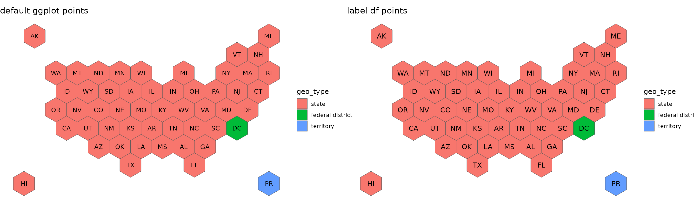
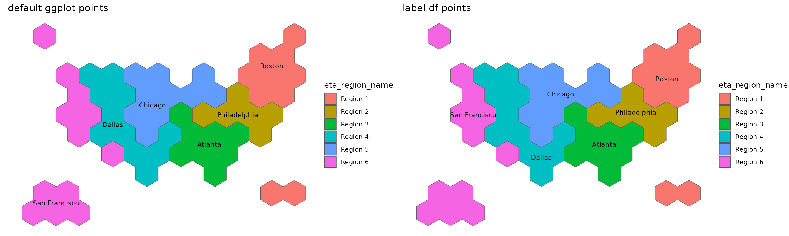

Each hex map has an associated ‘labels’ data frame that has a point at the center of the hexagon. These label data frames are not needed when plotting in ggplot and using them will produce the same output. They are mostly available as a backup in case the non-ggplot2 method of plotting does not automatically calculate the center of the hex maps.
usa52 <-get_coordinates(map = "usa52", coords = "hexmap")
usa52_labels <- get_coordinates(map = "usa52", coords = "labels")
default <- ggplot(usa52) +
geom_sf(aes(fill = geo_type)) +
geom_sf_text(aes(label = abbr_usps), size = 3.5) +
labs(title = "default ggplot points") +
theme_void()
labeldf <- ggplot(usa52) +
geom_sf(aes(fill = geo_type)) +
geom_sf_text(data = usa52_labels, aes(label = abbr_usps)) +
labs(title = "label df points") +
theme_void()
plot_grid(default, labeldf, nrow = 1)
The only time you should use the label df is when plotting the ETA region names; the points are NOT the center of the polygon and are adjusted to make the labels more closely align with the city of the regional office. However, I don’t know when you really be doing a plot like this.
ETAregions <-get_coordinates(map = "usaETAregions", coords = "hexmap")
ETAregions_labels <- get_coordinates(map = "usaETAregions", coords = "labels")
default <- ggplot(ETAregions) +
geom_sf(aes(fill = eta_region_name)) +
geom_sf_text(aes(label = eta_region_city), size = 3.25
) +
labs(title = "default ggplot points") +
theme_void()
labeldf <- ggplot(ETAregions) +
geom_sf(aes(fill = eta_region_name)) +
geom_sf_text(data = ETAregions_labels, aes(label = eta_region_city), size = 3.25) +
labs(title = "label df points") +
theme_void()
plot_grid(default, labeldf, nrow = 1)